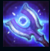
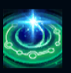
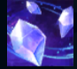
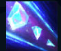
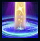

Taric
| Taric The Shield of Valoran | |
|---|---|
| Release date | 19.08.2009 |
| Class | Enchanter, Warden |
| Positions | Support |
| Resource | Mana |
| Range type | Melee |
| Adaptive type | Physical |
| Base statistics | |||
| Health | 575 – 2020 | Mana | 300 – 1320 |
| Health regen. | 6 – 14.5 |
Mana regen. | 8.5 – 22.1 |
| Armor | 40 – 97.8 | Attack damage | 55 – 114.5 |
| Magic resist. | 32 – 53.25 | Crit. damage | 175% |
| Move. speed | 340 | Attack range | 150 |
Taric, Aspectul Protectorului, stăpânește o putere incredibilă, cu ajutorul căreia luptă pentru a proteja viața, iubirea și frumusețea din Runeterra. După ce și-a neglijat îndatoririle militare și a fost exilat din țara lui natală, Demacia, Taric a urcat pe Muntele Targon pentru a-și căuta ispășirea. Și-a găsit în schimb o nouă menire: pătruns de puterea străvechiului popor din Targon, Taric a dobândit titlul de ''scutul Valoranului'' și apără acum întreaga lume de asaltul neobosit al creaturilor din Vid. |  |
BRAVADĂ După fiecare vrajă folosită, următoarele 2 atacuri de bază ale lui Taric se succed rapid, provoacă daune magice bonus și îi reduc timpii de reactivare ai vrăjilor de bază. |
||
|---|---|---|---|---|
 |
ATINGEREA STELELOR Vindecă aliații din apropiere în funcție de cumulurile strânse. Atacurile cu buff-ul ''Bravadă'' oferă un cumul de ''Atingerea stelelor''. |
|||
 |
BASTION Crește în mod pasiv armura lui Taric și a oricărui campion aliat care beneficiază de buff-ul ''Bastion''. Protejează în mod activ un aliat și îi oferă buff-ul ''Bastion'' cât timp acesta rămâne lângă Taric. Vrăjile lui Taric sunt lansate și de aliatul cu ''Bastion''. |
|||
|  |
FASCINAȚIE ORBITOARE Taric pregătește o rază de lumină astrală care, după o scurtă durată, provoacă daune magice și amețește inamicii. |
|||
 |
STRĂLUCIRE COSMICĂ Învăluie campionii aliați din apropiere în energie cosmică și îi face invulnerabili pe o perioadă scurtă. |